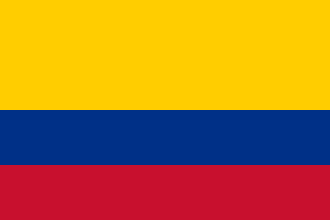

About Me
My name is Ivan. I am from Colombia but I'm living in ireland right now. I got marriaged 7 years ago and we we have one daughter. His name is Ana Sofia. I am currently working as an Maintenance technician. I love to spent my time with my family watching movies, playing and traveling to others countries

Colombia

Official Flag of Colombia
Colombia is a country located in South America, with coastlines on both the Pacific Ocean and the Caribbean Sea. Its capital is Bogotá, and it has a population of over 50 million people. The country is known for its cultural and geographic diversity, as well as its coffee, flowers, and emeralds.